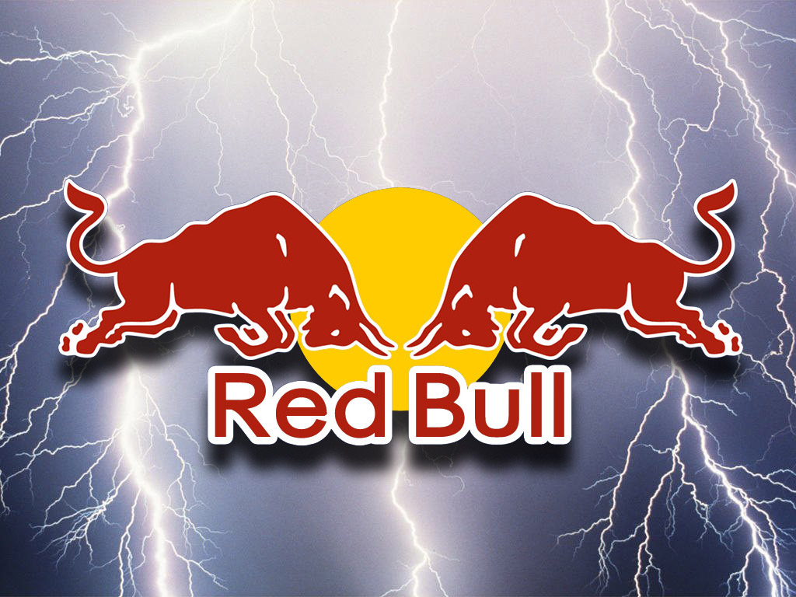
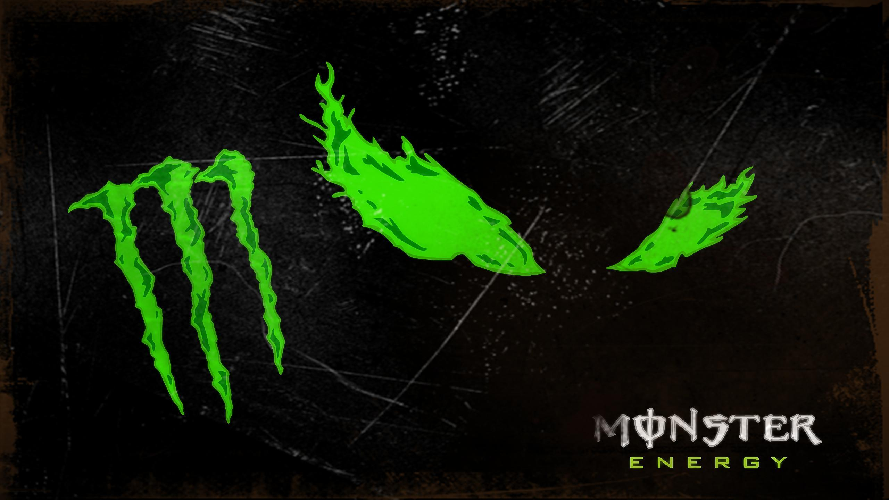

About Page
This website is created because of formula cars,as u know formula cars are the sports cars used for race,in this website u will gonna get to know more about formula cars and how are they made,how are they using those cars for race and how many km/h can formula cars reach. If u are formula fan then this website is definetly for you,but if u arent fan of those cars maybe get to know them u are gonna be interesed so what are u waiting for go and explore the page.
Sponsors

Few teams in motorsports are as commercially appealing as Red Bull, thanks to its brilliant marketing team—which ensures it stands out everywhere—and its technical department, which makes it highly competitive on the track. Overall, Red Bull is one of the most heavily sponsored teams in F1, with no less than 34 huge brands and names partnered with them.
With each deal worth millions, a significant portion of Red Bull’s revenue comes from its sponsors—some, while others have supported the Milton Keynes-based team for years.

It would be fair to say that F1 wouldn’t look anything like it does now without the investment from sponsors and partners. Whether that be to drivers and teams, or to the sport itself, business partnerships are a win-win for a sporting competitor from a financial standpoint and for their own recognition and brand identification.
In modern Formula 1 there are many different avenues a sponsor can go down in partnering either long or short term with an F1 driver or team, such as a technical partnership, provider partnership or an official brand..
Website Developers
Mate Chubinidze
Davit Choxeli
Rezi Qurdadze
Andria Gobejishvilu